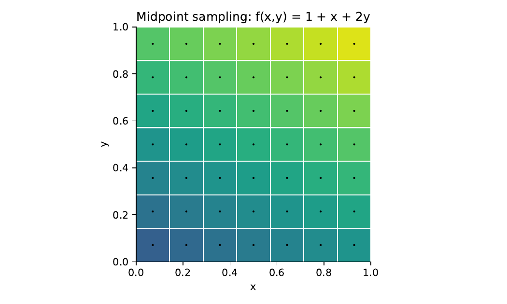
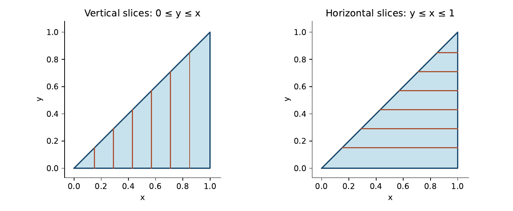
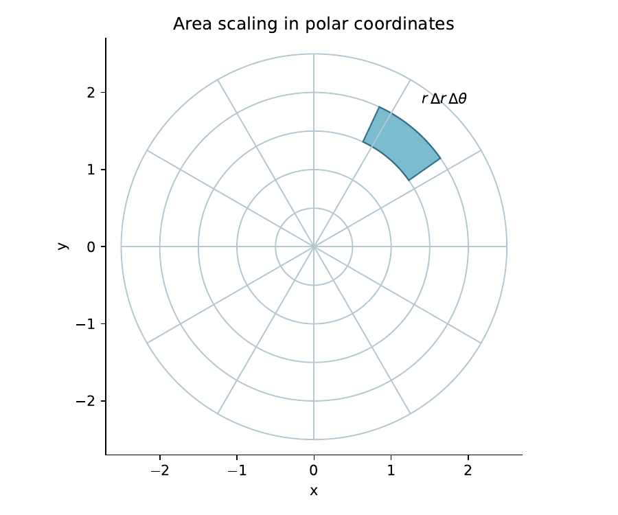
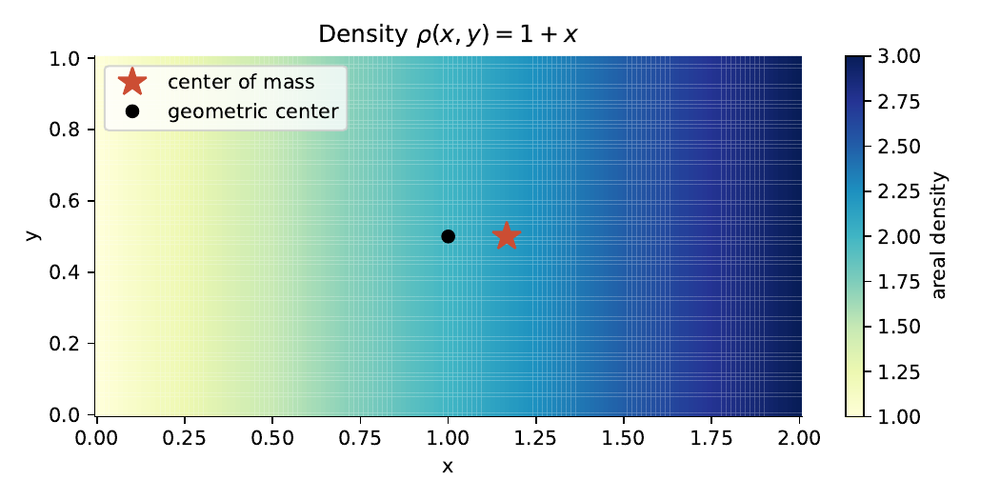
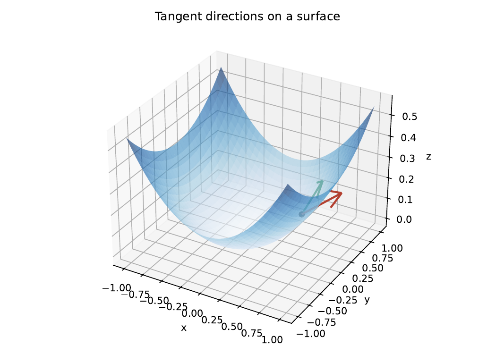
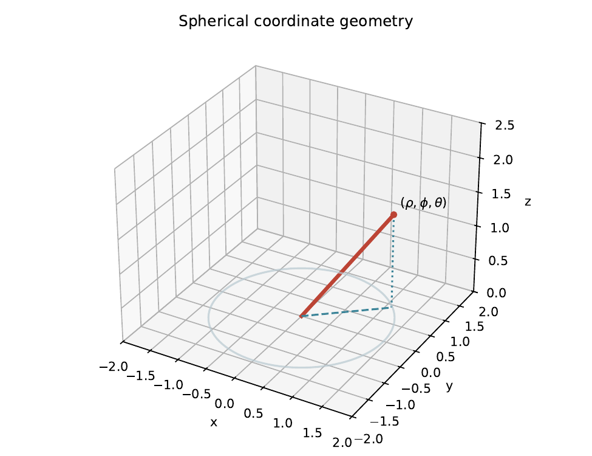

5. Multiple Integration and Applications
Learning. After completing this chapter, you should be able to define and interpret double and triple integrals; evaluate iterated integrals using Fubini’s theorem; describe Type I and Type II regions and reverse integration order; derive polar, cylindrical, and spherical Jacobians; apply the change-of-variables theorem; calculate volume, average value, mass, centroids, and moments of inertia; determine the area of graphs and parametrized surfaces; and use SymPy, SciPy, and NumPy to verify exact and approximate integrals.
Interactive investigation: Double Riemann sums
Approximate the volume under f(x,y)=1+x²+y² on the unit square using midpoint prisms.
Explore: How does the error change when the subdivision count doubles?
Why integrate over regions?
A single-variable definite integral accumulates quantities along an interval. When a quantity varies across a planar region \(D\), the analogous accumulation is a double integral; for a solid \(E\), it is a triple integral. Applications include volume, total heat, spatially varying population, material mass, and rotational inertia. The key mathematical ideas are subdivision, limits, and the geometry of the integration region.
Riemann sums in two dimensions
Suppose \(f\) is bounded on a rectangle \(R=[a,b]\times[c,d]\). Partition \(R\) into small rectangles \(R_{ij}\) of area \(\Delta A_{ij}\) and choose sample points \((x_{ij}^*,y_{ij}^*)\). The sum \[S=\sum_{i,j}f(x_{ij}^*,y_{ij}^*)\Delta A_{ij}\] approximates the total signed accumulation. If these sums approach a common limit as the maximum subrectangle diameter tends to zero, we define \[\iint_R f(x,y)\,\,\mathrm{d}A=\lim_{\|P\|\to0}\sum_{i,j}f(x_{ij}^*,y_{ij}^*)\Delta A_{ij}.\] For a nonrectangular bounded region \(D\), one can extend \(f\) by zero to a containing rectangle when the boundary is sufficiently regular. Continuous functions on bounded regions with piecewise smooth boundaries are integrable.
Example — A height field over a square. Let \(f(x,y)=1+x+2y\) on \(R=[0,1]^2\). Its average height is \(1+\frac12+2(\frac12)=\frac52\). Since \(R\) has unit area, \(\iint_R f\,\,\mathrm{d}A=\frac52\). This result can be checked with midpoint sums: sampling each of \(n^2\) equal cells gives the exact integral for this affine function, for every positive integer \(n\).

Theorem — Linearity, additivity, and comparison. For integrable \(f,g\) on \(D\) and constants \(\alpha,\beta\), \[\iint_D(\alpha f+\beta g)\,\,\mathrm{d}A=\alpha\iint_Df\,\,\mathrm{d}A+\beta\iint_Dg\,\,\mathrm{d}A.\] If \(D\) is the union of regions with disjoint interiors, the integral over \(D\) equals the sum of their integrals. If \(f\le g\) throughout \(D\), then \(\iint_Df\,\,\mathrm{d}A\le\iint_Dg\,\,\mathrm{d}A\).
Proof. Each property holds for every finite Riemann sum. Passing to the limit preserves sums and inequalities. For additivity, contributions from a shared piecewise smooth boundary vanish in the limit because the boundary has area zero.
Iterated integration and Fubini’s theorem
A remarkable simplification is that many double integrals can be evaluated by integrating one variable at a time.
Theorem — Fubini’s theorem for continuous functions. If \(f\) is continuous on \([a,b]\times[c,d]\), then \[\iint_R f\,\,\mathrm{d}A=\int_a^b\left(\int_c^d f(x,y)\,\,\mathrm{d}y\right)\,\mathrm{d}x=\int_c^d\left(\int_a^b f(x,y)\,\,\mathrm{d}x\right)\,\mathrm{d}y.\]
Proof — Explanation. Group the terms of a rectangular Riemann sum by columns, producing one-dimensional sums in \(y\) followed by sums in \(x\). Continuity ensures uniform convergence of the inner sums as the mesh is refined. The reversed grouping produces the other order.
Example — Two orders, one answer. For \(f(x,y)=x^2+3y\) on \(0\le x\le2\), \(0\le y\le1\), \[\int_0^2\int_0^1(x^2+3y)\,\,\mathrm{d}y\,\mathrm{d}x=\int_0^2(x^2+\tfrac32)\,\,\mathrm{d}x=\frac83+3=\frac{17}{3}.\] Integrating in the opposite order gives \(\int_0^1(\frac83+6y)\,\,\mathrm{d}y=\frac{17}{3}\).
Computational preview: symbolic and numerical verification
Remark — Paired computational laboratory. This example is revisited using identical inputs in the dedicated R and Python sections. Complete executable code appears in the companion files.
Notice that dblquad expects the integrand arguments in
the order (y, x). Its reported error is an estimate, not a
rigorous guarantee for every integrand.
Regions bounded by curves
Most applications involve triangles, disks, or regions enclosed by nonlinear curves. Correct bounds matter more than mechanical integration.
Definition. A Type I region is \(D=\{(x,y):a\le x\le b,\ g_1(x)\le y\le g_2(x)\}\). A Type II region is \(D=\{(x,y):c\le y\le d,\ h_1(y)\le x\le h_2(y)\}\). A region may have both descriptions, or require subdivision to use a particular orientation.
For a Type I region with continuous boundary functions, \[\iint_D f\,\,\mathrm{d}A=\int_a^b\int_{g_1(x)}^{g_2(x)}f(x,y)\,\,\mathrm{d}y\,\mathrm{d}x.\] For a Type II region, reverse the roles of \(x\) and \(y\).
Example — A triangular region. Let \(D\) be bounded by \(y=0\), \(x=1\), and \(y=x\). Its Type I description is \(0\le x\le1\), \(0\le y\le x\). Its Type II description is \(0\le y\le1\), \(y\le x\le1\). Thus \[\int_0^1\int_0^x (x+y)\,\,\mathrm{d}y\,\mathrm{d}x=\int_0^1\int_y^1(x+y)\,\,\mathrm{d}x\,\mathrm{d}y=\frac12.\] The geometric descriptions are equivalent even though the integration limits look different.

Reversing order can remove an obstacle
Consider \(I=\int_0^1\int_0^x e^{y^2}\,\,\mathrm{d}y\,\mathrm{d}x\). The inner integral has no elementary antiderivative. The region is \(0\le y\le x\le1\), so \[I=\int_0^1\int_y^1 e^{y^2}\,\,\mathrm{d}x\,\mathrm{d}y=\int_0^1(1-y)e^{y^2}\,\,\mathrm{d}y.\] The second term integrates exactly, while the first remains non-elementary; this is still a useful reduction, but not every order reversal produces a closed form. By contrast, for \[J=\int_0^1\int_0^x e^{x^2}\,\,\mathrm{d}y\,\mathrm{d}x=\int_0^1 xe^{x^2}\,\,\mathrm{d}x=\frac{e-1}{2},\] performing the inner integral immediately is effective. These examples emphasize that a clever order choice depends on the integrand as well as the region.
Checkpoint. Rewrite \(\int_0^2\int_{x^2/2}^{2}f(x,y)\,\,\mathrm{d}y\,\mathrm{d}x\) in the opposite order. Sketch the region first; the correct bounds are \(0\le y\le2\) and \(0\le x\le\sqrt{2y}\).
Area, volume, and average value
Taking \(f\equiv1\) gives the area \(A(D)=\iint_D1\,\,\mathrm{d}A\). If \(f\ge0\), the volume under \(z=f(x,y)\) above \(D\) is \(V=\iint_Df\,\,\mathrm{d}A\). If \(f\ge g\), the volume between the surfaces is \(\iint_D(f-g)\,\,\mathrm{d}A\). The average value of an integrable function over a region of positive area is \[f_{\mathrm{avg}}=\frac{1}{A(D)}\iint_Df\,\,\mathrm{d}A.\]
Example — Volume under a paraboloid. Above the disk \(x^2+y^2\le4\), consider \(z=4-x^2-y^2\). In polar coordinates, the volume is \[V=\int_0^{2\pi}\int_0^2(4-r^2)r\,\,\mathrm{d}r\,\mathrm{d}\theta=8\pi.\] The area of the base is \(4\pi\), so the average height is \(2\).
Polar coordinates and the Jacobian
For a planar region with circular symmetry, substitute \(x=r\cos\theta\), \(y=r\sin\theta\). The coordinate transformation has derivative matrix \[\frac{\partial(x,y)}{\partial(r,\theta)}=\begin{pmatrix}\cos\theta&-r\sin\theta\\\sin\theta&r\cos\theta\end{pmatrix},\qquad \det\frac{\partial(x,y)}{\partial(r,\theta)}=r.\] Consequently, area is not \(\,\mathrm{d}r\,\mathrm{d}\theta\): the small sector has area approximately \(r\,\Delta r\,\Delta\theta\), and \[\iint_D f(x,y)\,\,\mathrm{d}A=\iint_{D^*}f(r\cos\theta,r\sin\theta)r\,\,\mathrm{d}r\,\mathrm{d}\theta.\] The factor \(r\) is essential. Since \(r\ge0\), no absolute-value symbol is needed for this particular Jacobian.

Example — An annulus with nonconstant density. Let \(D\) be \(1\le x^2+y^2\le9\) and \(\rho(x,y)=\sqrt{x^2+y^2}\). Its total mass is \[M=\int_0^{2\pi}\int_1^3 r\cdot r\,\,\mathrm{d}r\,\mathrm{d}\theta=\frac{52\pi}{3}.\] The first \(r\) is the density; the second is the polar Jacobian.
Computational preview: integrating over a disk
Remark — Paired computational laboratory. This example is revisited using identical inputs in the dedicated R and Python sections. Complete executable code appears in the companion files.
Here r is the inner integration variable, so it appears
first in the callable.
Mass, centroids, and moments of inertia
Suppose a thin lamina occupies \(D\) and has nonnegative areal density \(\rho(x,y)\). The mass of a small piece is approximately \(\rho\,\Delta A\), hence \[M=\iint_D\rho\,\,\mathrm{d}A.\] Its first moments about the coordinate axes are \[M_x=\iint_D y\rho\,\,\mathrm{d}A,\qquad M_y=\iint_Dx\rho\,\,\mathrm{d}A.\] The center of mass is \((\bar x,\bar y)=(M_y/M,M_x/M)\) when \(M>0\). The moments of inertia about the axes and origin are \[I_x=\iint_Dy^2\rho\,\,\mathrm{d}A,\quad I_y=\iint_Dx^2\rho\,\,\mathrm{d}A,\quad I_O=I_x+I_y.\] The squared distance in each formula reflects the mechanical resistance to rotational acceleration. Units matter: if \(x,y\) are meters and \(\rho\) is kg/m\(^2\), then \(I_x\) is kg m\(^2\).
Example — A density that increases toward one edge. On \(D=[0,2]\times[0,1]\), let \(\rho(x,y)=1+x\). Then \[M=\int_0^2\int_0^1(1+x)\,\,\mathrm{d}y\,\mathrm{d}x=4,\quad M_y=\int_0^2x(1+x)\,\,\mathrm{d}x=\frac{14}{3},\] \[M_x=\int_0^2\int_0^1y(1+x)\,\,\mathrm{d}y\,\mathrm{d}x=2.\] Therefore \(\bar x=7/6\) and \(\bar y=1/2\). The horizontal shift of the centroid toward larger \(x\) is physically reasonable.
Example — A uniform circular lamina. A disk of radius \(a\) with constant density \(\rho_0\) has mass \(M=\rho_0\pi a^2\) and \[I_O=\int_0^{2\pi}\int_0^a r^2\rho_0\,r\,\mathrm{d}r\,\mathrm{d}\theta=\frac12\rho_0\pi a^4=\frac12Ma^2.\] By symmetry, \(I_x=I_y=\frac14Ma^2\).

Surface area as a double integral
For a smooth graph \(z=f(x,y)\) over \(D\), a small horizontal rectangle is stretched by the factor \(\sqrt{1+f_x^2+f_y^2}\) when lifted to the surface. Thus \[A=\iint_D\sqrt{1+f_x(x,y)^2+f_y(x,y)^2}\,\,\mathrm{d}A.\]
Proof — Derivation from tangent vectors. Parametrize the graph by \(\boldsymbol{R}(x,y)=(x,y,f(x,y))\). Then \(\boldsymbol{R}_x=(1,0,f_x)\) and \(\boldsymbol{R}_y=(0,1,f_y)\). The parallelogram spanned by these vectors has area \(\|\boldsymbol{R}_x\times\boldsymbol{R}_y\|\,\,\mathrm{d}x\,\mathrm{d}y=\sqrt{1+f_x^2+f_y^2}\,\,\mathrm{d}x\,\mathrm{d}y\). Summing these local areas yields the formula.
For a general regular parametrized surface \(\boldsymbol{R}(u,v)\), the corresponding formula is \[A=\iint_\Omega\|\boldsymbol{R}_u\times\boldsymbol{R}_v\|\,\,\mathrm{d}u\,\mathrm{d}v.\] The cross product must be nonzero at regular points. Surface area is different from projected area; a tilted surface is larger than its horizontal shadow.
Example — Area of a sloping plane. For \(z=2x+3y\) over \(0\le x\le2\), \(0\le y\le1\), the graph area is \(\iint_D\sqrt{1+4+9}\,\,\mathrm{d}A=2\sqrt{14}\).
Example — A sphere by parametrization. Parametrize the sphere of radius \(a\) by \(\boldsymbol{R}(\phi,\theta)=(a\sin\phi\cos\theta,a\sin\phi\sin\theta,a\cos\phi)\), \(0\le\phi\le\pi\), \(0\le\theta\le2\pi\). Then \(\|\boldsymbol{R}_\phi\times\boldsymbol{R}_\theta\|=a^2\sin\phi\), so \(A=\int_0^{2\pi}\int_0^\pi a^2\sin\phi\,\,\mathrm{d}\phi\,\mathrm{d}\theta=4\pi a^2\).

Triple integrals and solid regions
For a bounded solid \(E\subset\mathbb{R}^3\), a triple integral is the limit of sums \(\sum f(x_i^*,y_i^*,z_i^*)\Delta V_i\). In particular, \(V(E)=\iiint_E1\,\,\mathrm{d}V\). If \(\rho(x,y,z)\) is volume density, then \(M=\iiint_E\rho\,\,\mathrm{d}V\). For a vertically simple solid, \[E=\{(x,y,z):(x,y)\in D,\ g(x,y)\le z\le h(x,y)\},\] we obtain \[\iiint_Ef\,\,\mathrm{d}V=\iint_D\left(\int_{g(x,y)}^{h(x,y)}f(x,y,z)\,\,\mathrm{d}z\right)\,\mathrm{d}A.\]
Example — Volume of a tetrahedron. Consider \(E=\{(x,y,z):x,y,z\ge0,\ x+y+z\le1\}\). Its volume is \[V=\int_0^1\int_0^{1-x}\int_0^{1-x-y}1\,\,\mathrm{d}z\,\mathrm{d}y\,\mathrm{d}x=\frac16.\] The factor \(1/6\) can also be understood as the volume of the unit cube simplex.
Cylindrical coordinates
Set \(x=r\cos\theta\), \(y=r\sin\theta\), \(z=z\). The Jacobian determinant has absolute value \(r\), giving \[\,\mathrm{d}V=r\,\,\mathrm{d}r\,\mathrm{d}\theta\,\mathrm{d}z\] with the integration order chosen to match the region. For a right circular cylinder \(0\le r\le a\), \(0\le\theta\le2\pi\), \(0\le z\le h\), the volume is \(\pi a^2h\).
Spherical coordinates
Use the convention \[x=\rho\sin\phi\cos\theta,\quad y=\rho\sin\phi\sin\theta,\quad z=\rho\cos\phi,\] where \(\rho\ge0\) is radial distance, \(0\le\phi\le\pi\) is the polar angle measured from the positive \(z\)-axis, and \(0\le\theta<2\pi\) is azimuth. The Jacobian has absolute value \(\rho^2\sin\phi\), hence \[\,\mathrm{d}V=\rho^2\sin\phi\,\,\mathrm{d}\rho\,\mathrm{d}\phi\,\mathrm{d}\theta.\]
Example — Volume and mean squared radius of a ball. For a ball \(B_a\) of radius \(a\), \[V=\int_0^{2\pi}\int_0^\pi\int_0^a\rho^2\sin\phi\,\,\mathrm{d}\rho\,\mathrm{d}\phi\,\mathrm{d}\theta=\frac{4\pi a^3}{3}.\] Moreover, \[\frac1V\iiint_{B_a}(x^2+y^2+z^2)\,\,\mathrm{d}V=\frac{4\pi a^5/5}{4\pi a^3/3}=\frac{3a^2}{5}.\]

The general change-of-variables theorem
Theorem — Change of variables in two dimensions. Let \(T:U\to D\) be a one-to-one continuously differentiable transformation with continuously differentiable inverse on the interiors of the regions, and assume its Jacobian determinant does not vanish there. Under standard boundary regularity assumptions, for integrable \(f\), \[\iint_Df(x,y)\,\,\mathrm{d}x\,\mathrm{d}y=\iint_U f(T(u,v))\left|\det DT(u,v)\right|\,\,\mathrm{d}u\,\mathrm{d}v.\] The analogous three-dimensional formula uses \(|\det DT(u,v,w)|\).
Proof — Geometric derivation. Near \((u,v)\), the differentiable map is approximated by its derivative matrix \(DT\). A small rectangle with side vectors \((\Delta u,0)\) and \((0,\Delta v)\) becomes approximately a parallelogram spanned by the columns of \(DT\) multiplied by those side lengths. Its area is \(|\det DT|\Delta u\Delta v\). Substituting this local area scaling into Riemann sums gives the formula; the full theorem makes the limiting argument precise.
Example — A sheared parallelogram. Let \(T(u,v)=(u+v,u-v)\) for \(0\le u,v\le1\). Then \(DT=\left(\begin{smallmatrix}1&1\\1&-1\end{smallmatrix}\right)\) and \(|\det DT|=2\). Thus the parallelogram \(D=T([0,1]^2)\) has area \(2\). Also \[\iint_Dx\,\,\mathrm{d}A=\int_0^1\int_0^1(u+v)\cdot2\,\,\mathrm{d}u\,\mathrm{d}v=2.\] The determinant is negative before taking the absolute value: orientation reversal does not produce negative physical area.
Computational preview: symbolic Jacobians
Remark — Paired computational laboratory. This example is revisited using identical inputs in the dedicated R and Python sections. Complete executable code appears in the companion files.
A nonzero Jacobian is a local condition; global one-to-one behavior must still be checked. Polar coordinates, for example, are not one-to-one if the angular interval includes both endpoints \(0\) and \(2\pi\), although this boundary duplication does not change the integral.
Numerical integration: accuracy and limitations
Symbolic integration is ideal when a closed form exists, but many
realistic fields have no elementary antiderivative.
scipy.integrate.quad, dblquad, and
tplquad perform adaptive numerical quadrature. A numerical
result should be checked against geometry, symmetry, alternative
coordinate systems, or refinement studies.
Example — A Gaussian over a square. Consider \(I=\int_{-1}^1\int_{-1}^1e^{-(x^2+y^2)}\,\,\mathrm{d}y\,\mathrm{d}x\). The integrand separates, so \[I=\left(\int_{-1}^1e^{-x^2}\,\,\mathrm{d}x\right)^2=\pi\operatorname{erf}(1)^2.\] This exact special-function form gives a reference value for numerical quadrature.
Remark — Paired computational laboratory. This example is revisited using identical inputs in the dedicated R and Python sections. Complete executable code appears in the companion files.
Midpoint rules and Monte Carlo integration
For a rectangle \(R\) divided into \(n\times n\) equal cells, the midpoint estimate is \[Q_n=\sum_{i,j}f(x_i^*,y_j^*)\Delta x\Delta y.\] For Monte Carlo integration over a region \(D\) of known area \(A\), if \(\boldsymbol{X}_1,\ldots,\boldsymbol{X}_N\) are independent uniform samples from \(D\), then \[\widehat I_N=\frac{A}{N}\sum_{k=1}^Nf(\boldsymbol{X}_k).\] Its standard error is approximately \(A s_f/\sqrt N\), where \(s_f\) is the sample standard deviation of the evaluated field. This \(N^{-1/2}\) scaling is typically slower than high-order deterministic quadrature in low dimensions, but Monte Carlo methods become attractive for irregular or high-dimensional regions.
Example — Monte Carlo volume of a paraboloid cap. Sample \((X,Y)\) uniformly from the square \([-2,2]^2\). Define \(g(X,Y)=(4-X^2-Y^2)\mathbf1_{\{X^2+Y^2\le4\}}\). Then \(16\,\mathbb E[g(X,Y)]=8\pi\). The square area factor is \(16\), and points outside the disk contribute zero.
Remark — Paired computational laboratory. This example is revisited using identical inputs in the dedicated R and Python sections. Complete executable code appears in the companion files.
Checkpoint. Explain why sampling points uniformly from the bounding square requires the factor \(16\), while sampling uniformly from the disk requires the factor \(4\pi\). What would go wrong if the square samples outside the disk were simply discarded without changing the normalization?
Additional worked examples from the R manuscript
A triangular region: integration in either order
Let \(D=\{(x,y):x\ge0,\ y\ge0,\ x+y\le1\}\). Then \[I=\iint_D(x+2y)\,\,\mathrm{d}A=\int_0^1\int_0^{1-x}(x+2y)\,\,\mathrm{d}y\,\mathrm{d}x=\frac12.\] Reversing the order gives \(I=\int_0^1\int_0^{1-y}(x+2y)\,\,\mathrm{d}x\,\mathrm{d}y=1/2\). This example will be used in the R/Python quadrature comparison. The integrand is nonnegative and the triangle has area \(1/2\), providing a useful plausibility check.
A spatial exposure field
On the rectangular field \(D=[0,3]\times[0,2]\), suppose a hypothetical exposure intensity is \(c(x,y)=2+0.5x+y^2\) units per square meter. The total and average are \[E=\int_0^3\int_0^2 c(x,y)\,\,\mathrm{d}y\,\mathrm{d}x=\frac{49}{2}=24.5,\qquad \overline c=\frac{E}{6}=\frac{49}{12}.\] The model is illustrative rather than an empirical exposure measurement. The physical units are important: integration converts intensity per unit area into a total over the region.
A nonuniform rectangular lamina
For \(\rho(x,y)=1+x\) on \(0\le x\le2\), \(0\le y\le1\), the mass is \[M=\int_0^2\int_0^1(1+x)\,\,\mathrm{d}y\,\mathrm{d}x=4.\] Its first moments yield \[\bar x=\frac1M\int_0^2\int_0^1x(1+x)\,\,\mathrm{d}y\,\mathrm{d}x=\frac76,\qquad \bar y=\frac1M\int_0^2\int_0^1y(1+x)\,\,\mathrm{d}y\,\mathrm{d}x=\frac12.\] The centroid shifts toward larger \(x\), where the material is denser.
The Jacobian as a local area scale
Under \(x=2u+v\), \(y=u+2v\), the Jacobian matrix is \(\begin{psmallmatrix}2&1\\1&2\end{psmallmatrix}\), whose determinant is \(3\). The image of the unit square is a parallelogram of area \(3\), so the determinant agrees with the direct geometric area calculation.
A rigorous view of integrability and region boundaries
A double integral is not simply an instruction to perform two antiderivatives. It is a limit of sums over small planar cells. The limit is independent of the choice of sample points when the integrand is Riemann integrable. A bounded function that is continuous except on finitely many smooth arcs is integrable over a bounded region with piecewise smooth boundary. For more general discontinuities and unbounded regions, additional hypotheses are required; the usual calculus-level Fubini formulas should not be applied automatically.
Theorem — Bounds from the range of a field. Suppose \(D\) has finite positive area \(A\) and \(m\le f(x,y)\le M\) on \(D\). Then \[mA\le\iint_D f\,\,\mathrm{d}A\le MA,\qquad m\le\frac1A\iint_Df\,\,\mathrm{d}A\le M.\]
Proof. Integrate the pointwise inequalities \(m\le f\le M\) and use \(\iint_D1\,\,\mathrm{d}A=A\). Division by \(A>0\) gives the average-value bounds.
Example — A physical plausibility check. On the square \([0,2]^2\), a modeled concentration \(c(x,y)=3+x+y\) lies between \(3\) and \(7\). Therefore its integrated total lies between \(12\) and \(28\). Direct integration gives \(\iint_Dc\,\,\mathrm{d}A=20\), and the average concentration is \(5\). A numerical answer of \(40\) would violate the range bound before any code inspection.
When Fubini’s theorem needs care
For continuous integrands over compact rectangular regions, the two iterated integrals agree. The extension to absolutely integrable functions permits many additional cases. For signed integrands with divergent positive and negative parts, changing order without checking hypotheses can alter the result or make it undefined. For the applications in this chapter we work with continuous or bounded piecewise continuous fields over bounded piecewise smooth regions, except where a special limiting argument is explicitly given.
Constructing integration bounds from geometry
A dependable method is to draw the region, identify a generic vertical or horizontal slice, and write the lower and upper limits before simplifying the integrand. The variable integrated first varies across each slice; the outer variable indexes the slices. When a region changes its lower or upper boundary, split the integral into pieces.
Example — A region that requires splitting. Let \(D\) lie above \(y=0\) and below both \(y=x\) and \(y=2-x\) for \(0\le x\le2\). The upper boundary switches at \(x=1\), so \[\iint_D1\,\,\mathrm{d}A=\int_0^1\int_0^x1\,\,\mathrm{d}y\,\mathrm{d}x+\int_1^2\int_0^{2-x}1\,\,\mathrm{d}y\,\mathrm{d}x=1.\] In the other order, the region is \(0\le y\le1\) and \(y\le x\le2-y\), giving \[\int_0^1\int_y^{2-y}1\,\,\mathrm{d}x\,\mathrm{d}y=1.\] The second description requires one integral instead of two.
Example — Reversing an integral with a non-elementary antiderivative. Consider \[I=\int_0^1\int_{\sqrt{x}}^1e^{y^3}\,\,\mathrm{d}y\,\mathrm{d}x.\] The region is \(0\le y\le1\) and \(0\le x\le y^2\). Hence \[I=\int_0^1\int_0^{y^2}e^{y^3}\,\,\mathrm{d}x\,\mathrm{d}y=\int_0^1y^2e^{y^3}\,\,\mathrm{d}y=\frac{e-1}{3}.\] This is a genuine improvement from changing order: the original inner antiderivative is not elementary, while the reversed integral is elementary.
Symmetry, separability, and scaling
Before calculating, inspect the geometry and the integrand. If \(D\) is symmetric about the \(y\)-axis and \(f(-x,y)=-f(x,y)\), then \(\iint_Df\,\,\mathrm{d}A=0\) by pairing points with opposite \(x\)-coordinates. On a rectangular domain, products of one-variable functions separate: \[\int_a^b\int_c^d g(x)h(y)\,\,\mathrm{d}y\,\mathrm{d}x=\left(\int_a^bg(x)\,\,\mathrm{d}x\right)\left(\int_c^dh(y)\,\,\mathrm{d}y\right).\]
Example — Odd symmetry on a disk. Let \(D=\{(x,y):x^2+y^2\le4\}\). The integral of \(x(1+y^2)\) over \(D\) is zero because the integrand is odd in \(x\). This cancellation is mathematical, not numerical: quadrature returning a small nonzero number is a floating-point artifact.
Example — Scaling a family of disks. For \(p>-2\), let \(I_p(a)=\iint_{x^2+y^2\le a^2}(x^2+y^2)^{p/2}\,\,\mathrm{d}A\). Polar coordinates give \[I_p(a)=2\pi\int_0^a r^{p+1}\,\,\mathrm{d}r=\frac{2\pi a^{p+2}}{p+2}.\] Thus doubling the radius multiplies the integral by \(2^{p+2}\). The condition \(p>-2\) ensures integrability at the origin.
Deriving coordinate Jacobians
The polar map \(T(r,\theta)=(r\cos\theta,r\sin\theta)\) has derivative \[DT=\begin{pmatrix}\cos\theta&-r\sin\theta\\\sin\theta&r\cos\theta\end{pmatrix},\qquad\det DT=r.\] Therefore \(\,\mathrm{d}A=r\,\,\mathrm{d}r\,\mathrm{d}\theta\) for \(r\ge0\). The factor \(r\) is essential: cells farther from the origin subtend greater area for the same angular width.
In cylindrical coordinates, \(T(r,\theta,z)=(r\cos\theta,r\sin\theta,z)\) has determinant \(r\). For spherical coordinates under our convention, the columns of the derivative are the \(\rho\), \(\phi\), and \(\theta\) tangent vectors; their scalar triple product has absolute value \(\rho^2\sin\phi\). The singularities at \(r=0\) and at the spherical poles are coordinate singularities, not holes in the physical region; they occupy sets of zero volume and do not invalidate ordinary volume calculations.
Example — Mass of a radially graded disk. A thin disk of radius \(a\) has density \(\rho(r)=\rho_0(1+\lambda r^2/a^2)\), where \(\rho_0>0\) and \(\lambda>-1\). Its mass is \[M=\int_0^{2\pi}\int_0^a\rho_0\left(1+\lambda\frac{r^2}{a^2}\right)r\,\,\mathrm{d}r\,\mathrm{d}\theta=\pi\rho_0a^2\left(1+\frac\lambda2\right).\] The units are mass, because surface density is mass per area and \(r\,\,\mathrm{d}r\,\mathrm{d}\theta\) is an area element.
Moments of inertia and the parallel-axis principle
For a lamina of density \(\rho(x,y)\), its moment of inertia about the origin perpendicular to the plane is \[I_O=\iint_D(x^2+y^2)\rho(x,y)\,\,\mathrm{d}A.\] Let \((\bar x,\bar y)\) be the center of mass. Expanding \(x^2+y^2\) around this point and using the vanishing first central moments yields \[I_O=I_C+M(\bar x^2+\bar y^2),\] where \(I_C=\iint_D((x-\bar x)^2+(y-\bar y)^2)\rho\,\,\mathrm{d}A\). This is the parallel-axis theorem for the perpendicular axes.
Example — Moment of inertia of a graded rectangle. For \(D=[0,2]\times[0,1]\) and \(\rho=1+x\), the mass is \(4\) and the centroid is \((7/6,1/2)\). The moment of inertia about the origin is \[I_O=\int_0^2\int_0^1(x^2+y^2)(1+x)\,\,\mathrm{d}y\,\mathrm{d}x=8.\] Consequently \(I_C=8-4((7/6)^2+(1/2)^2)=\frac{14}{9}\). Both are nonnegative and have mass-times-length-squared units.
Surface area from tangent-vector geometry
Let \(\boldsymbol{r}(u,v)\) parametrize a regular surface patch. A small parameter rectangle is mapped approximately to a parallelogram with sides \(\boldsymbol{r}_u\Delta u\) and \(\boldsymbol{r}_v\Delta v\). Its area is \(\|\boldsymbol{r}_u\times\boldsymbol{r}_v\|\Delta u\Delta v\). Thus \[A=\iint_U\|\boldsymbol{r}_u\times\boldsymbol{r}_v\|\,\,\mathrm{d}u\,\mathrm{d}v.\] For a graph \(\boldsymbol{r}(x,y)=(x,y,f(x,y))\), this reduces to \[A=\iint_D\sqrt{1+f_x^2+f_y^2}\,\,\mathrm{d}A.\]
Example — Surface area of a conical graph. Over the annulus \(1\le x^2+y^2\le4\), consider \(z=\sqrt{x^2+y^2}\). Away from the origin, \(f_x^2+f_y^2=1\), so \[A=\iint_D\sqrt2\,\,\mathrm{d}A=3\pi\sqrt2.\] The annulus avoids the nondifferentiable tip; the formula applies throughout the region.
Error analysis for computational integration
An algorithm returns an approximation, not an exact mathematical integral. For a midpoint rule on a square, smoothness often yields error of order \(h^2\), where \(h\) is the grid spacing. Doubling the resolution in each direction should then reduce the error by approximately a factor of four, once the asymptotic regime is reached. Adaptive quadrature provides an estimated local error, which should be interpreted alongside independent checks.
For Monte Carlo estimation, \(\widehat I=A\overline{f(\boldsymbol{X})}\) is unbiased when the samples are independent and uniformly distributed over \(D\) and \(f\) has finite expectation. If the variance is finite, its standard error is \(A\sigma_f/\sqrt N\), estimated using the sample standard deviation. Multiplying the sample size by four roughly halves the standard error. A random confidence interval is not a deterministic guarantee for a particular run.
Example — Exact midpoint error for a quadratic field. For \(f(x,y)=x^2+y^2\) on \([0,1]^2\), the exact integral is \(2/3\). The \(n\times n\) midpoint sum is \[Q_n=\frac23-\frac{1}{6n^2}.\] Therefore \(|Q_n-2/3|=1/(6n^2)\), proving second-order convergence and giving a direct unit test for R and Python implementations.
Checkpoint. Explain why increasing the Monte Carlo sample size from \(10^4\) to \(4\times10^4\) generally improves the standard error by a factor of two, whereas doubling the grid resolution of a smooth midpoint quadrature may improve its deterministic error by a factor of four.
Solving the mathematical problems using R
The examples use base R and its built-in one-dimensional
integrate() routine. Nested integration uses a small
wrapper that vectorizes the inner result. The complete program is
code/chapter05_paired.R.
Triangular integration and order reversal
inner <- function(x) vapply(x,function(xx)
integrate(function(y) xx+2*y,0,1-xx)$value,numeric(1))
I <- integrate(inner,0,1)$value
print(c(numerical=I,exact=1/2))
stopifnot(abs(I-.5)<1e-8)Exposure accumulation and average intensity
inner <- function(x) vapply(x,function(xx)
integrate(function(y) 2+.5*xx+y^2,0,2)$value,numeric(1))
E <- integrate(inner,0,3)$value
print(c(total=E,average=E/6,exact=49/2))Mass, centroid, and the polar volume
M <- integrate(function(x) 1+x,0,2)$value
Mx <- integrate(function(x) x*(1+x),0,2)$value
print(c(mass=M,xbar=Mx/M,ybar=.5))
vol <- integrate(function(r) 2*pi*(4-r^2)*r,0,2)$value
print(c(paraboloid_volume=vol,exact=8*pi))Monte Carlo integration and uncertainty
set.seed(2026); n <- 100000
x <- runif(n); y <- runif(n)
vals <- ifelse(x+y<=1,x+2*y,0)
print(c(estimate=mean(vals),MC_SE=sd(vals)/sqrt(n),exact=.5))Midpoint convergence and a change-of-order benchmark
midpoint <- function(n) {
m <- ((1:n)-0.5)/n
sum(outer(m,m,function(x,y) x^2+y^2))/n^2
}
for (n in c(4,8,16,32)) {
err <- abs(midpoint(n)-2/3)
cat("n =",n,"error =",format(err,digits=8),"\n")
stopifnot(abs(err-1/(6*n^2))<1e-12)
}
I <- integrate(function(y) y^2*exp(y^3),0,1)$value
stopifnot(abs(I-(exp(1)-1)/3)<1e-10)Solving the same problems using Python
Python provides symbolic integration with SymPy, adaptive numerical
quadrature with SciPy, and Monte Carlo simulation with NumPy. The
companion program code/chapter05_paired.py uses the same
integrands and domains.
Triangular integral and exact check
import sympy as sp
from scipy.integrate import dblquad, quad
x,y=sp.symbols('x y',real=True)
exact=sp.integrate(sp.integrate(x+2*y,(y,0,1-x)),(x,0,1))
num=dblquad(lambda yy,xx:xx+2*yy,0,1,0,lambda xx:1-xx)[0]
print(exact,num)
assert exact==sp.Rational(1,2) and abs(num-.5)<1e-8Exposure field and centroid
E=dblquad(lambda yy,xx:2+.5*xx+yy**2,0,3,0,2)[0]
M=quad(lambda xx:1+xx,0,2)[0]
Mx=quad(lambda xx:xx*(1+xx),0,2)[0]
print('exposure',E,'average',E/6)
print('mass',M,'centroid',(Mx/M,.5))Paraboloid volume and reproducible simulation
import numpy as np
vol=quad(lambda r:2*np.pi*(4-r*r)*r,0,2)[0]
rng=np.random.default_rng(2026);n=100000
xs=rng.random(n);ys=rng.random(n)
vals=np.where(xs+ys<=1,xs+2*ys,0)
print('volume',vol,'exact',8*np.pi)
print('MC estimate',vals.mean(),'SE',vals.std(ddof=1)/np.sqrt(n))Comparing R and Python results
Both languages compute the same mathematical integral, but R’s
integrate() requires a nested wrapper for a double
integral, whereas SciPy provides dblquad. SymPy
additionally returns an exact rational value. The Monte Carlo estimates
will not be identical even when both random seeds are set to 2026,
because the random-number generators differ. Compare each estimate with
the exact answer and its own estimated standard error, rather than
demanding bit-for-bit agreement.
Application: spatially varying exposure and uncertainty
A hypothetical monitoring area has dimensions \(3\,\mathrm m\) by \(2\,\mathrm m\) and intensity \(c(x,y)=2+0.5x+y^2\) exposure units per square meter. The exact total is \(24.5\) units and the spatial average is \(49/12\). If the coefficient of \(y^2\) is uncertain, replace it by \(\beta\) and derive \[E(\beta)=\int_0^3\int_0^2(2+0.5x+\beta y^2)\,\,\mathrm{d}y\,\mathrm{d}x=16.5+8\beta.\] Thus \(\,\mathrm{d}E/\,\mathrm{d}\beta=8\) in the corresponding units. If \(\beta\) changes from \(1\) to \(1.1\), the predicted total rises by \(0.8\). The derivative is an exact sensitivity for this linear-in-parameter model, not an estimate of measurement error. Students should discuss why an integral of a modeled field cannot by itself establish real-world exposure risk.
Common errors and a problem-solving checklist
Before computing an integral, sketch the region, verify the limits, include the Jacobian, check units, and compare with a symmetry argument or a bound. Numerical agreement is evidence of correct implementation but is not a proof of a general identity.
Midpoint convergence and a change-of-order benchmark
import numpy as np
from scipy.integrate import quad
def midpoint(n):
m = (np.arange(n)+0.5)/n
xx, yy = np.meshgrid(m,m,indexing='ij')
return np.mean(xx**2+yy**2)
for n in [4,8,16,32]:
err = abs(midpoint(n)-2/3)
print('n =',n,'error =',err)
assert abs(err-1/(6*n*n))<1e-12
I = quad(lambda y:y*y*np.exp(y**3),0,1)[0]
assert abs(I-(np.e-1)/3)<1e-10Exercises
Conceptual and analytical problems
Define a double integral using Riemann sums. State two assumptions that guarantee integrability for a continuous field on a bounded region.
Evaluate \(\int_0^2\int_0^3(2x-y)\,\,\mathrm{d}y\,\mathrm{d}x\) in both orders.
Evaluate \(\iint_{[0,1]^2}(x^2+y^2)\,\,\mathrm{d}A\) and determine the average value.
Sketch \(D=\{(x,y):0\le x\le2,\ 0\le y\le x/2\}\) and rewrite its integral in Type II form.
Reverse the order of \(\int_0^1\int_{x^2}^{1}f(x,y)\,\,\mathrm{d}y\,\mathrm{d}x\).
Evaluate \(\int_0^1\int_0^x(x+2y)\,\,\mathrm{d}y\,\mathrm{d}x\) by reversing order.
Find the area bounded by \(y=x^2\) and \(y=2x\).
Find the volume beneath \(z=6-x-y\) above \([0,2]\times[0,1]\).
Determine the average value of \(f(x,y)=xy\) on \([0,2]\times[0,3]\).
Explain why the order of integration can matter computationally even when Fubini’s theorem guarantees equal answers.
Derive the polar Jacobian directly from the determinant of the transformation matrix.
Evaluate \(\iint_D(x^2+y^2)\,\,\mathrm{d}A\) for the disk \(D:x^2+y^2\le9\).
Find the area of the annulus \(4\le x^2+y^2\le25\) using polar coordinates.
Compute the volume under \(z=9-x^2-y^2\) above the disk \(x^2+y^2\le9\).
Evaluate \(\iint_D xy\,\,\mathrm{d}A\) over the disk centered at the origin, and justify your result by symmetry.
For density \(\rho(x,y)=2+x\) on \([0,1]^2\), find mass and centroid.
Compute \(I_x\), \(I_y\), and \(I_O\) for a uniform square lamina \([-a,a]^2\) of density \(\rho_0\).
Show that the centroid of a uniform disk is its center, without explicitly evaluating both first moments.
Derive the graph surface-area element from the cross product of its tangent vectors.
Find the surface area of \(z=x+y\) over the unit square.
Parametrize the lateral surface of a cylinder of radius \(a\) and height \(h\) and derive its area.
Compute the volume of the solid \(x,y,z\ge0\), \(2x+y+z\le2\).
Evaluate \(\iiint_E z\,\,\mathrm{d}V\) for \(E=[0,1]\times[0,2]\times[0,3]\).
Derive the cylindrical Jacobian and use it to compute the volume of a cylinder.
Derive the spherical Jacobian or verify it using a symbolic determinant.
Find the volume of the upper hemisphere \(x^2+y^2+z^2\le a^2\), \(z\ge0\).
Compute \(\iiint_{B_a}(x^2+y^2+z^2)\,\,\mathrm{d}V\) using spherical coordinates.
For \(T(u,v)=(3u+v,u+2v)\), compute the Jacobian determinant and the area of the image of the unit square.
Explain why \(|\det DT|\) appears in a change-of-variables formula rather than \(\det DT\).
Transform the ellipse \(x^2/4+y^2/9\le1\) to a unit disk and compute its area.
Python and applied investigations
Use SymPy to integrate \(x^2+xy+y^2\) over \([0,1]^2\) and check with SciPy’s
dblquad.Use
dblquadto calculate the volume under \(z=1-x^2-y^2\) above the unit disk; compare Cartesian and polar descriptions.Construct midpoint Riemann sums for \(e^{x+y}\) on the unit square. Record absolute error for \(n=4,8,16,32\).
Simulate a nonuniform lamina with density \(\rho(x,y)=1+2x\) on \([0,1]^2\) and compare numerical and exact centroids.
Use SymPy to compute the Jacobian of \(x=2u+v\), \(y=u-v\) and verify area scaling numerically.
Use
tplquadto estimate the volume of \(x,y,z\ge0\), \(x+y+z\le1\).Approximate the surface area of \(z=x^2+y^2\) above the unit disk using numerical integration and a polar change of variables.
Compare the numerical volume of a sphere with its exact value \(4\pi a^3/3\) for \(a=1,2,3\).
Run the Monte Carlo paraboloid-volume experiment with five random seeds and discuss variability.
Create an original figure showing how the centroid of \(\rho(x,y)=1+\alpha x\) on \([0,1]^2\) changes with \(\alpha\ge0\).
Estimate the moment of inertia of a disk with radial density \(\rho(r)=1+r\) and compare with a symbolic result.
Explain a realistic application in which spatial density, not geometric area alone, determines the quantity of interest. Formulate the integral and specify units.
Chapter summary
Multiple integrals extend accumulation from intervals to regions and solids. Fubini’s theorem converts integrals over simple regions into iterated integrals; changing integration order can simplify computation. Coordinate transformations encode geometry through Jacobians, and double or triple integrals quantify volume, averages, mass, centroids, and moments. Surface area introduces a related cross-product scaling. Python supports symbolic derivation, deterministic quadrature, visualization, and stochastic approximation, but geometric reasoning remains indispensable.
Further mathematical and computational exercises
Prove that \(\iint_Df\,\,\mathrm{d}A\) lies between \(mA(D)\) and \(MA(D)\) when \(m\le f\le M\). Explain the significance for a nonnegative density.
Find the area of the region under \(y=\min(x,3-x)\) for \(0\le x\le3\), by slicing in both directions.
Reverse the order in \(\int_0^1\int_{\sqrt x}^1\cos(y^3)y^2\,\,\mathrm{d}y\,\mathrm{d}x\) and evaluate the result.
Calculate \(\iint_{x^2+y^2\le9}(x^2+y^2)^{3/2}\,\,\mathrm{d}A\) and state the dimensions of the result if \(x,y\) measure meters.
A disk has density \(\rho_0(1+\lambda r^2/a^2)\). Derive the moment of inertia about its central perpendicular axis.
Establish the parallel-axis theorem for a planar lamina directly from the definitions of centroid and first moments.
Derive the Jacobian for the transformation \(x=3u+v\), \(y=u-2v\). Determine whether orientation is preserved.
Derive the surface area of \(z=2\sqrt{x^2+y^2}\) over the annulus \(1\le x^2+y^2\le9\).
Prove that the midpoint estimate for \(x^2+y^2\) over the unit square is \(2/3-1/(6n^2)\).
In R and Python, compute the midpoint error for \(n=8,16,32,64\); report error ratios and discuss the observed order.
Use Monte Carlo sampling to estimate the integral of \(x^2+y^2\) over the unit square. Compare uncertainty estimates at \(N=10^3\), \(10^4\), and \(10^5\) without treating a single run as proof of convergence.
For a density field of your choice, report the units of total mass, first moments, centroid, and moment of inertia; explain why unit consistency is an effective diagnostic.
Chapter project: spatial mass and centroid estimation
Scenario. A rectangular experimental panel occupies \(0\le x\le2\), \(0\le y\le1\) meters. Its hypothetical areal density is \(\rho_\alpha(x,y)=1+\alpha x\) kg/m\(^2\), where \(\alpha\ge0\) has units m\(^{-1}\). The goal is to quantify how nonuniform density changes total mass, centroid, and moment of inertia.
Derive \(M(\alpha)=\iint_D\rho_\alpha\,\,\mathrm{d}A\) and the first moments \(M_y=\iint_D x\rho_\alpha\,\,\mathrm{d}A\) and \(M_x=\iint_D y\rho_\alpha\,\,\mathrm{d}A\).
Obtain exact formulas for \(\bar x(\alpha)\) and \(\bar y(\alpha)\); evaluate at \(\alpha=0,0.5,1,2\) and explain the direction of the shift.
Derive the polar moment \(I_O=\iint_D(x^2+y^2)\rho_\alpha\,\,\mathrm{d}A\) and check dimensional consistency.
Implement the integrals numerically in R using nested
integrate()calls and in Python usingscipy.integrate.dblquad. Compare both against your exact formulas.Generate a contour or heat-map figure in each language for at least two values of \(\alpha\), with the corresponding centroid marked.
Use Monte Carlo sampling to estimate \(M\) and \(\bar x\) at \(\alpha=1\). Report the seed, sample size, numerical estimates, and variability over five independent runs.
Write a two-page report describing the model assumptions, exact and numerical results, numerical discrepancies, and limitations of the stylized density field.
Suggested rubric (100 points): mathematical derivations (30), R implementation (15), Python implementation (15), figures and labels (15), numerical validation (10), interpretation and limitations (15).